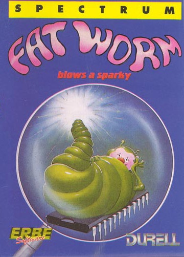
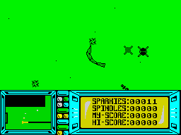

Fat Worm Blows A Sparky


{kind=link}

| Publisher: | Durell |
| Price: | £9.95 |
| Year: | 1986 |
| Source: | CRASH, Issue 34 |

Let’s face it, just about the dumbest habitat for your average worm is the inside of a Spectrum. But, things being the way they are in computer games, that’s exactly where this particular worm resides.
Ol’ Fatty, the world’s most dense worm, has clearly hit upon the theory that this is the place where he is least likely to be hassled by blackbirds, robins and the like.

burper to get rid of it. Must eat the
same sort of food as the Spiky Haired
Ones on ZZAP! to have a digestive
system like this...
Just as he is settling down to the easy life, he suddenly realises that things aren’t so wonderful after all. Contrary to popular opinion, the inside of the average Spectrum is absolutely crawling with life. Creeper bugs buzz around in Sputniks, swooping low over the main PCB. The Sputniks, if not dealt with, transform into Crawlies which try to attach themselves to Fatty. Just to add to the problems, termite-like Crawlies sometimes erupt from the surface of the PCB and chase him around.
Fatty’s eventual aim in life is the very natural urge to pass on his genes to another generation. Considering the limited intelligence he has displayed up to date, this seems a thoroughly dubious goal. To reproduce, Fatty needs to collect 50 spindles lying around on the PCB. Then he’s got to find the disk drive, get all his data copied and clone himself.
The microscopic world of Fatty is a world of bewildering height and depth. What might seem a sliver of silver conductor to you or me is an insurmountable obstacle to him. To get around, he has to be carefully steered up convenient ramps and slid along data buses suspended at dizzying heights above the PCB. All the various bits and blocks scattered around the place are given true perspective, so that, when they are at the centre of the screen, they appear flat. As Fatty moves, and the object approaches the edge of the screen, the sides of the object come into view giving an impression of height not unlike flying over a Lilliputian version of New York.
Fatty’s fate is sealed if he picks up more than four Crawlies, but there are handy debuggers scattered around, and by crawling into them, he can shed any Crawlies picked up. He can also fight back against the Crawlies by using blaster sparkies fired horizontally straight from the nose, and by laying burper sparkies which wait until a Sputnik is flying overhead and then rise up to eliminate it. Very high-flying Sputniks are, unfortunately, immune. Burpers are also useful for changing direction, and can take out any Crawlies which happen to bump into them. Extra sparkies are awarded for picking up spindles, and can also be picked up when zipping along the thin data buses. Furthermore, misfired burper sparkies which end up lying on the PCB can be consumed and regurgitated later. Mapping is an essential feature to find Fatty’s way around the immense circuit, and to help, the game has a small insert map showing some of the nearby obstacles, spindles, and a rough indication of Fatty’s present position.
Fat Worm Blows a Sparky originally started life as Killer DOS, a mucho macho serious simulation of software worms invading computer systems, cloning themselves and corrupting all the disks. But Durell decided that it was all getting slightly silly, and instead chose to release a game which had absolutely no relevance to anything whatsoever. And thus was Fatty created.
CRITICISM
“Wow! This game has got graphics which look so amazing that I don’t think I can comment on them fairly. The title is unusual, if nothing else, but hardly prepares you for the stunning originality of the game. Playability and addictiveness are of the highest standard, but as for the graphics — well, what can I say? As far as animation and solid 3D goes, this is probably the best I have ever seen, though the colour accolade must still go to Lightforce. Now, if Durell teamed up with FTL, I would probably be reduced to a moaning, speechless moron. But then, what’s new?!”
“Not exactly a run-of-the-mill title for a computer game but then this isn’t really a run-of-the-mill game. Stomping around the inside of a computer has been done many times before but Durell has certainly done it well, and differently. Fat Worm, graphically, is as revolutionary as 3D Ant Attack was in its day; the 3D effect is ASTOUNDING. The only thing that spoils the graphics is the use of colour. After a while the bright green really does affect your eyes, though you can always turn down the colour control on your TV. Soundwise I have no grumbles — there are many effects during the game and a really good tune on the title screen. Controlling your Fat Worm is a mite difficult but given a little practice you will soon be turning on a sixpence. It isn’t often that I feel that I have to add a new game to my relatively small collection, but this one’s a must. Go and buy it now, your life will be incomplete without it!”
“So the worm turns. Not only that, he writhes and wriggles. You just won’t believe the sort of graphics in this game. The perspective and sense of height are so realistic I got vertigo! Not just content with awesome graphics, the game play is terrific. Trying to steer the worm around with the Sputniks buzzing overhead, and all the time keeping in mind where you’re going, is some game. It’s so good to see something this original. It’s just like nothing else. This is going to set a new standard for solid 3D.”
COMMENTS
| Control keys: | Redefinable |
| Joystick: | Kempston |
| Keyboard play: | Good |
| Use of colour: | Mostly shades of green |
| Graphics: | Innovative 3D — remarkable |
| Sound: | Workmanlike |
| Skill levels: | One |
| Screens: | Huge scrolling area |
| General rating: | Extremely silly, and wonderful fun |
| Use of computer: | 98% |
| Graphics: | 97% |
| Playability: | 93% |
| Getting started: | 82% |
| Addictive qualities: | 94% |
| Value for money: | 89% |
| Overall: | 95% |